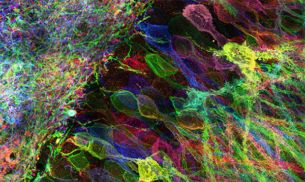
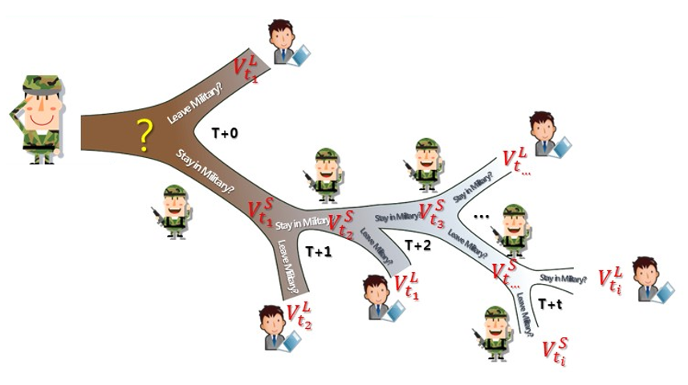

Working with Prof. Ed Boyden at MIT
Former Data Scientist at Korea MND
BA in Statistics from UC Berkeley
[Resume]
I want to understand how the brain works. Utilizing my computational/statistics background and fast-growing new experimental skillsets, I am determined to design scalable, open-source tools that address the end-to-end pipeline – from experiments to data analysis to sharing data with other researchers around the world for fruitful collaborations – and figure out how many discrete cell types exist and how they are connected in the brain, at the level of synaptic connections.
Contact me at tayshin@mit.edu
Tool development for brain mapping (Feb 2017 - Current)
Prof. Ed Boyden's Synthetic Neurobiology Group, MIT Media Lab, Cambridge, MA
Recently, researchers at Professor Ed Boyden’s lab at MIT demonstrated a proof of concept work for scalable neuronal mapping [1].
Known as Expansion Microscopy (ExM), this technique is a completely novel way to resolve nanometer scale structures of the brain
on a conventional, high-speed, diffraction-limited microscope. By synthesizing a swellable polymer network within the specimen
and anchoring the biomolecules of interest (i.e., synaptic proteins, phospholipids, etc.) to the network, the molecules can be
physically separated thorough isotropic expansion, after the pre-existing bonds between them are disrupted with relevant enzymes
and chemicals (i.e., Proteinase K, detergent, etc.). The materials used in ExM are the same as those used in water-absorbing
baby diapers, and the entire process is remarkably simple and inexpensive; furthermore, it has proven to be highly reproducible
across the world in the past two years. Boyden lab has improved ExM significantly, and today we can achieve ~20 nanometer
resolution with this method and demonstrated its potential applications in addressing proteomics and in-situ sequencing [2,
3,
4].
Due to its ease of use and diverse functionality, ExM has the potential to become the most ideal imaging technique for
addressing connectomics.

Image from Tillberg and Chen, et al. Nat. Biotech. 34:987–992.
Here, I have been sitting in chemistry, physics, biology, and neuroscience classes and reading stacks of relevant textbooks
and papers to learn the experimental procedures behind brain mapping. Although getting up to speed with lab work has been
exceptionally challenging, I have been making a great progress; I am now independently conducting experiments, where I
optimize chemical tags for identifying and imaging key biomolecules in the mouse brain with ExM. In addition, I am also
actively involved in projects conducting in-situ RNA sequencing in the brain, and recently I realized that the spatial
information of RNA obtained from this method can be used as an efficient, complementary training set for Google’s
Flood Filling algorithm for scalable neuronal segmentation.
Furthermore, with my statistical computing background, I have been constructing an experimental pipeline for seamless data
processing. Essentially, I am integrating our low-cost fluorescent microscope with a toolbox of algorithms that allow anyone
without in-depth knowledge in statistics or computer science to easily perform advanced image analyses, such as 3D
deconvolution and high-definition range imaging. Gaining intuition from the web labs has been crucial to coming up with these
plans for integrating statistical learning with brain imaging.
Personnel Budget Projection Model (Aug 2015 - Jan 2017)
Ministry of National Defense, South Korea
I used various time-series machine learning techniques to build a forecasting model (monthly temporal resolution) managing
the military's personnel budget (around $15B). Implementation of the model has been saving around $20M annually for the military.
During the process, I built a dynamic programming econometrics model for predicting each military personnel's future
stay/leave behavior and convined the policy makers to adopt the model nationwide. Publication in preparation.

Estimating the Suicide Risk of Soldiers (Feb 2015 - Jul 2015)
Ministry of National Defense, South Korea
I created a predictive model for estimating the suicide risk of soldiers based on their physiological data. Although
military doctors and counselors had already collected
the necessary data for analysis, I did not believe in expecting meaningful results without having
in-depth contextual understanding of the data. Therefore, I random-sampled soldiers whenever possible to personally
conduct the analysis as well. The model out-performed the original model by 140% AUC-ROC chart basis. After the model
was implemented at the military, the suicide rate decreased by 27%,
as compared to the 10-year average. The Korea National Assembly’s ethics committee was also convinced that the budget for
psychotherapy should be increased. The rate has been continuously decreasing since then, and for this effort, I also
received Ministerial Citation, one of the highest honors a soldier could receive.
Popular music as an economic indicator (Aug 2013 - Sep 2014)
With Prof. James Powell at UC Berkeley, CA
I scripted in Python and R to collect and rearrange 1,825,000 values in nine unique characteristics of top-ranked, popular
songs in the United States (1960-2010). More specifically, I investigated causal relations by conducting Granger and
instantaneous causality test, impulse-reponse analysis, and forecast error variance decomposition analysis and
used vector autoregression techniques to capture the linear interdependencies among multiple time series data.
Bank credit financial economics (Apr 2013 - Apr 2014)
With Prof. Raymond Hawkins at UC Berkeley, CA
I developed an evolved model for classifying bank failure by considering 68 accounting variables from balance sheets of
98,540 different banks and defined decision boundaries by considering different types of errors of the models obtained by
several machine learning and econometric models.